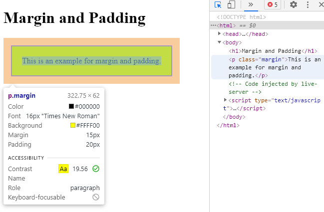
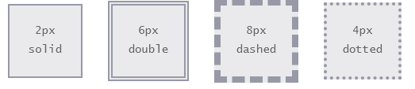
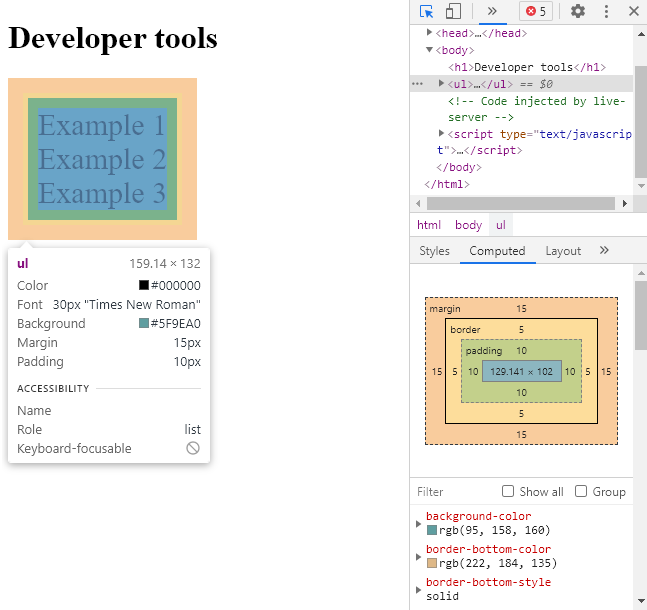

Според концепцията за box model, всеки HTML елемент е правоъгълна кутия и може да има content, padding, border и margin, които се управляват от CSS:
Content - oбластта, в която се показва съдържанието (текст и изображения), което може да бъде оразмерено като се използват свойства като width и height.
Padding - областта, разположена около съдържанието, представена като празно пространство. Размерът може да се контролира с помощта на свойството padding.
Border - гранична кутия, която обгръща съдържанието и всякакви padding-и. Размерът може да се контролира с помощта на свойството border.
Margin - най-външният слой, който обгръща съдържанието, padding-a и границите, като представлява празно пространство между този елемент и други елементи. Размерът може да се контролира с помощта на свойството margin.
Разбирането на този модел е от ключово значение за възможността да се създават layout-и със CSS и подравняването на елементи с други елементи.
Долното изображение показва как изглежда box model-a с разграничените слоеве:
Полезно е да знаем как се display-ват елементите, за да можем да работим с box model-а. По подразбиране display за повечето елементи е block или inline, но тази стойност може да бъде заменена. Има доста стойности за свойството display, но най-често срещаните са block, inline, inline-block и none. Можем да променим стойността на display на елемент, като изберем този елемент в CSS и декларираме нова стойност.
Block-level елементите заемат всяка налична ширина, независимо от тяхното съдържание, и започват от нов ред. Свойствата width и height работят. Padding, margin и border ще изтласкат други елементи от кутията.
<h1>Display: block</h1>
<p>This is the first paragraph.</p>
<p>This is the second paragraph.</p>
<ul>
<li>One</li>
<li>Two</li>
<li>Three</li>
</ul>
Код 1: Представяне на display: block (HTML код) [5]
Код 2: Представяне на display: block (CSS код) [5]
Пример 1: Визуализиране на display: block чрез браузър [4]
Inline-level елементите заемат само ширината, която съдържанието им изисква и се нареждат на един и същи ред, един след друг. Свойствата width и height не работят. Вертикалните padding, margin и border се прилагат, но няма да изтласкат другите елементи, докато хоризонталните ще го направят.
<h1>Display: inline</h1>
<p>This is the first paragraph.</p>
<p>This is the second paragraph.</p>
<p>This is the third paragraph.</p>
Код 3: Представяне на display: inline (HTML код) [5]
p{
display: inline;
border: 2px solid blue;
}
Код 4: Представяне на display: inline (CSS код) [5]
Пример 2: Визуализиране на display: inline чрез браузър [4]
Block-level елементите обикновено се използват за по-големи части от съдържанието, като заглавия и структурни елементи. Inline-level елементите обикновено се използват за по-малки части от съдържанието, като например няколко думи, които са bold или italic.
Използването на inline-block ще позволи на елемент да се държи като елемент на ниво блок, приемайки всички свойства на модела на кутията. Елементът обаче ще бъде display-нат на един и същи ред с с други елементи. Едно важно нещо е, че те не винаги се допират или се показват директно един след друг. Обикновено има малко пространство между два inline-block елемента.
<h1>Display: inline-block</h1>
<p>This is the first paragraph.</p>
<p>This is the second paragraph.</p>
<ul>
<li>One</li>
<li>Two</li>
<li>Three</li>
</ul>
<p>This is the third paragraph.</p>
Код 5: Представяне на display: inline-block (HTML код) [5]
Код 6: Представяне на display: inline-block (CSS код) [5]
Пример 3: Визуализиране на display: inline-block чрез браузър [4]
Използването на стойност none ще скрие напълно елемент и ще направи страницата така, сякаш този елемент не съществува. Всички елементи, вложени в този елемент, също ще бъдат скрити.
<h1>Display: none</h1>
<p>This is the first paragraph.</p>
<ul>
<li>One</li>
<li>Two</li>
<li>Three</li>
</ul>
Код 7: Представяне на display: none (HTML код) [5]
Пример 4: Визуализиране на display: none чрез браузър [4]
Дотук разгледахме външния тип display. Същестува и вътрешен тип, който разпределя елементите вътре в кутията. По подразбиране елементите в кутията са разположени в нормален поток, което означава, че те се държат точно както всеки друг блок или inline елемент.
Можем обаче да променим типа на вътрешния display, като използваме стойности на display като flex. Ако зададем display: flex; на елемент, външният вид на дисплея е блок, но вътрешният тип на дисплея се променя на flex. Всички директни деца на тази кутия ще станат гъвкави елементи и ще бъдат изложени в съответствие с правилата, посочени в спецификацията на Flexbox. Друга стойност, която същестува е grid, но тези неща поподат в изцяло друга CSS тема. Засега нас ни интересува само нормалния поток.
Width and height
Общата ширина на даден елемент може да се изчисли по следния начин: margin-right + border-right + padding-right + width + padding-left + border-left + margin-left, а височината: margin-top + border-top + padding-top + height + padding-bottom + border-bottom + margin-bottom.
Според концепцията за box model това представляват width и height. Трябва да се отбележи, че с ключовите думи width и height може да се променят размерите само на съдържанието.
Фигура 2: Изчисляване на общата ширина и височина на кутия [2]
Използвайки формулите, можем да намерим общата височина и ширина на елемента от Фигура 2:
Ширина: 492px = 20px + 6px + 20px + 400px + 20px + 6px + 20px
Височина: 192px = 20px + 6px + 20px + 100px + 20px + 6px + 20px
Box моделът е една от най-объркващите части на HTML и CSS. Задаваме стойност на свойството width 400 пиксела, но действителната ширина на нашия елемент е 492 пиксела. Това е защото, за да определим действителния размер на кутията, трябва да вземем предвид и padding-ите, и границите, и margin-ините за четирите страни на кутията.
Всеки елемент има ширина и височина по подразбиране. Тази ширина и височина може да е нула, но браузърите изобразяват всеки елемент с размер по подразбиране. Също така, могат и да бъдат посочени стойностите oт нас.
Ширината по подразбиране на даден елемент зависи от стойността на display за елемента. Block елементите имат ширина по подразбиране 100%. Те отнемат цялото налично хоризонтално пространство. Inline и block-inline елементите се разширяват и свиват хоризонтално, за да поместят тяхното съдържание. Inline елементите не могат да имат фиксиран размер, защото свойствата за ширината и височината работят само за non-inline елементи.
Височината по подразбиране на даден inline елемент се определя от съдържанието му. Елементът ще се разширява и свива вертикално, колкото е необходимо, за да побере съдържанието му.
<h1>Width and height example</h1>
<p class="block">Example for block</p>
<p class="inline">Example for inline element</p>
<p class="inline-block">Example for inline-block element</p>
Код 9: Представяне на width и height за блокове и inline елементи (HTML код) [5]
Код 10: Представяне на width и height за блокове и inline елементи (CSS код) [5]
Пример 5: Визуализиране на width и height за блокове и inline елементи чрез браузър [4]
Margin and padding
В зависимост от елемента, браузърите могат да приложат margin и padding по подразбиране, за да помогнат за по-добра четимост. За да избегнем това, може да ги нулираме и след това сами да задаваме стойности.
Мargin ни позволява да зададем размера на пространството, което заобикаля елемент. Те могат да се използват за подпомагане на позиционирането на елементи на определено място на страницата или за осигуряване на спейсинг, като се пазят всички останали елементи на определно разстояние.
Margin работи хоризонтално върху inline елементи, т.е вертикалните margin-и не се приемат от inline елементи. Margin работи и хоризонтално, и вертикално върху блокове и inline-block елементи.
Padding е подобно на margin, но то попада вътре в границата на елемент. Свойството padding се използва за осигуряване на разстояния директно в даден елемент.
Padding работи и хоризонтално, и вертикално върху inline елементи, но отгоре и отдолу може да се влива в линиите на елементи, които са върху или под елемента. Padding работи и хоризонтално, и вертикално върху блокове и inline-block елементи.
<h1>Margin and Padding</h1>
<p class="margin-and-padding">This is an example for margin and padding.</p>
Код 11: Представяне на margin и padding (HTML код) [5]
Код 12: Представяне на margin и padding (CSS код) [5]
Пример 6: Визуализиране на margin и padding чрез браузър [4]
Чрез инспектиране на страницата (това ще го разгледаме по-подробно малко по-късно) можем да забележим разликата между margin и padding. Padding-a e в зеленикавия, а margin-a в банановия цвят.

Пример 7: Разлика между margin и padding показана чрез developer tools на браузъра [4]
Декларациите на margin и padding могат да са както къси, така и дълги. Когато използваме къса декларация, за да зададем стойността и за четирите страни на елемент – top, right, bottom, left, подаваме една стойност.
За да зададем уникални стойности за четирите страни на даден елемент, посочваме тези стойности в реда top, right, bottom, left, движейки се по посока на часовниковата стрелка.
div {
margin: 15px 20px 5px 10px;
padding: 20px 0px 30px 25px;
}
Код 15: Представяне на margin и padding с 4 стойности [5]
С дълга декларация можем да зададем стойността за една страна наведнъж. Името на всяко свойство е последвано от тире и страната, например padding-left, margin-top. По този начин кодът е по-чист.
div {
padding-right: 20px;
margin-bottom: 35px;
}
Код 16: Представяне на padding и margin чрез дълга декларация [5]
За margin съществуват още две стойности – auto и inherit. При първото браузърът избира подходящ margin, който да използва. Например, в определени случаи тази стойност може да се използва за центриране на елемент. При второто се прехвърлят margin-ите на родител към дъщерен елемент.
Margin и padding са напълно прозрачни и не приемат никакви цветови стойности. Тъй като са прозрачни, те показват цветовете на фона на относителните елементи. За margin виждаме цвета на фона на родителския елемент, а за padding - цвета на фона на елемента, към който се прилага padding-a.
Border
Border попада между padding-a и margin-a, осигурявайки контур около елемент. To изисква три стойности: width, style и color.
Чрез дълга декларация тези три стойности могат да бъдат разделени на border-width, border-style и border-color. Те са полезни за промяна или презаписване на единична стойност на границата.
<h1>Border</h1>
<p>Showing the three values of border</p>
Код 17: Представяне на border с width, style и color (HTML код) [5]
Код 18: Представяне на border с width, style и color (CSS код) [5]
Пример 8: Визуализиране на border с width, style и color чрез браузър [4]
Границите могат да имат различен външен вид. Най-често срещаните стойности на стила са solid, double, dashed, dotted и none.

Фигура 3: Представяне на различните видове граници [2]
Граница може да се постави от едната страна на елемент. За това са необходими свойствата: border-top, border-right, border-bottom и border-left. Стойностите за тези свойства са същите като тези на свойството border: width, style и color.
div{
border-bottom: 6px double red;
}
Код 19: Представяне на border само на една страна [5]
Освен това, отделните гранични страни могат да бъдат контролирани на още едно ниво. Думите са разделени с тире, започващи с border, последвани от избраната страна – top, right, bottom, left, и след това width, style или color, в зависимост от желаното свойство.
div{
border-top-color: pink;
}
Код 20: Представяне на border на една страна на по-детайлно ниво [5]
Свойството border-radius ни позволява да закръглим ъглите на елемент. То приема единици за дължина, включително проценти и пиксели, които идентифицират радиуса, с който ъглите на даден елемент трябва да бъдат закръглени. Единична стойност ще закръгли еднакво всичките четири ъгъла на елемент. Две стойности ще закръглят горния ляв/долния десен и горния десен/долния ляв ъгъл в този ред. Четири стойности ще закръглят горния ляв, горния десен, долния десен и долния ляв ъгъл в този ред. Tук за border отново може да се използва дълга декларация.
<body>
<h1>Border-radius</h1>
<p class="first">First example of border-radius</p>
<p class="second">Second example of border-radius</p>
<p class="third">Third example of border-radius</p>
</body>
Код 21: Представяне на border-radius (HTML код) [5]
Код 22: Представяне на на border-radius (CSS код) [5]
Пример 9: Визуализиране на border-radius чрез браузър [4]
Box sizing
Вече разбрахме, че пълните width и height на един елемент не са просто ширината и височината на съдържанието, а включва и padding-ите, margin-ите и границите. Свойството box-sizing може да регулира това. То може да приема стойностите: content-box, padding-box и border-box.
Свойството content-box е това по подразбиране. Ако зададем ширината на даден елемент на 100px, тогава полето за съдържание на елемента ще бъде с ширина 100px и ширината на която и да е граница или padding ще бъде добавена към крайната визуализирана ширина, което прави елемента по-широк от 100px.
Свойството padding-box променя модела на кутията, като включва всички стойности на padding в рамките на ширината и височината на елемент. С увеличаване на стойностите на padding-a, размерът на съдържанието в даден елемент се свива пропорционално. Но това свойство е остаряло и не трябва да се използва.
Последното свойство, border-box, променя модела на кутията, така че всички стойности на border и padding са включени в ширината и височината на даден елемент. Когато използваме border-box, ако елементът има ширина 400px, padding от 20px около всяка страна и border от 10px около всяка страна, действителната ширина ще остане 400px.
Без значение коя стойност на box-sizing на кутията се използва, ще трябва да се добавят всякакви стойности на margin, за да се изчисли пълният размер на елемента.
Най-добрата стойност за оразмеряване на кутията за използване е border-box, защото по-лесно можем да сметнем ширината или височината на елемент. Единственият недостатък e, че не се поддържа от всички браузъри.
Повечето браузъри имат така наречените Developer tools. Тези инструменти ни позволяват да проверим елемент на страница, да видим къде този елемент живее в HTML документа и да видим какви свойства и стойности на CSS са приложени към него. Повечето от тези инструменти включват и диаграма на box model-a, която показва изчисления размер на елемент.
Когато сме в страница, можем да натиснем десен бутон на мишката и от падащото меню да изберем “Inspect”. Отдясно на страницата се зареждат инструменти, с които можем да проверяваме нашия код. Горе вляво има иконка със стрелкичка. Ако щракнем на нея и после местим курсора на мишката върху различни елементи от страницата, можем да видим информация за тях. Ако щракнем върху елемент и изберем “Computed” от инструментите, ще ни се покаже разбивка на модела на кутията за избрания елемент.
Има още други интересни инструменти, които могат да се изпробват в различни браузъри.

Пример 10: Представяне на developer tools на браузъра [4]